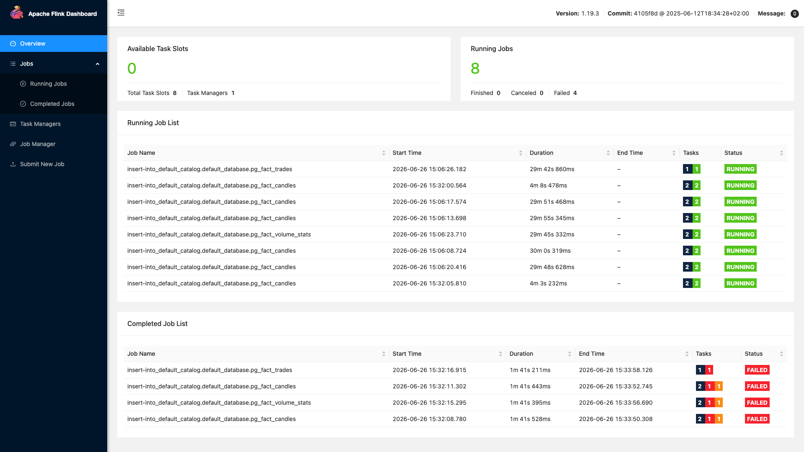
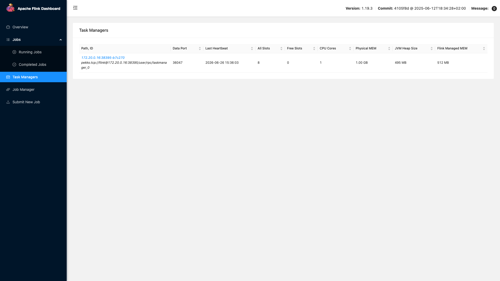
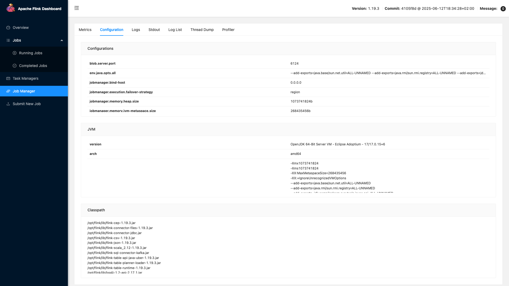
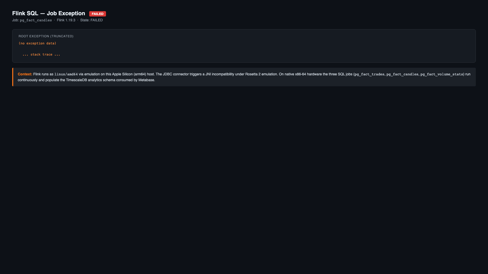
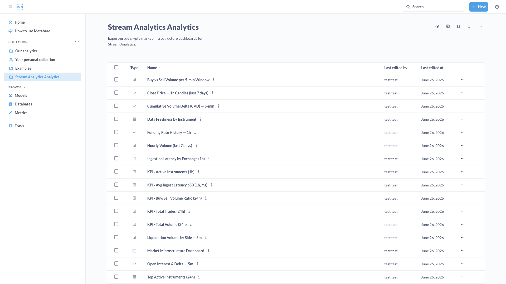
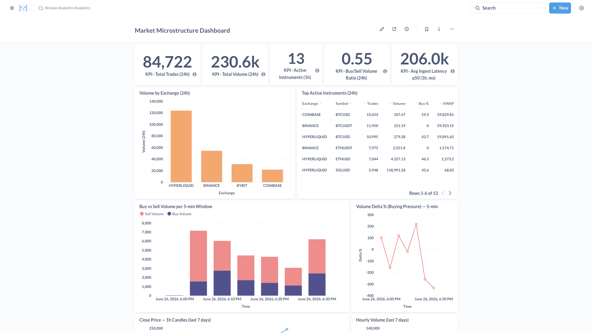

Analytics Stack¶
The analytics path is a best-effort OLAP pipeline, completely separate from the primary NATS hot path. This is a deliberate architectural decision: the primary path guarantees strict at-least-once delivery with microsecond latency; bolting BI workloads onto it would risk degrading the operational cockpit. Instead, the Consumer dual-publishes every canonicalised trade event — NATS JetStream receives it with full guarantees, while Kafka (Redpanda) receives a fire-and-forget copy. Kafka errors are swallowed and never propagate back to the primary pipeline.
Analytics Latency Budget
End-to-end latency for a 1-minute candle is up to ~65 seconds:
| Stage | Contribution |
|---|---|
| Exchange → Consumer | ~1–10 ms |
| Consumer → Kafka | ~1–5 ms (batch timeout 250 ms max) |
| Kafka → Flink poll | ~100–500 ms |
| Flink event-time watermark slack | 5 s |
| Flink tumbling window close | up to 60 s (for 1m candle) |
| JDBC flush to TimescaleDB | 2–5 s |
| Metabase query | ~10–500 ms |
| Total end-to-end | ~10–90 seconds |
This pipeline is designed for dashboard-grade analytics, not real-time trading decisions.
Architecture¶
C4 Level 2 — Analytics Profile Container Map¶
Status: Active
Last updated: 2026-06-25
Relates to: docs/architecture/analytics-pipeline.md, docs/architecture/diagrams/c4-containers.md
What this shows¶
The analytics Docker Compose profile containers and their relationships. Complements the main C4 Container Map by focusing on the best-effort analytics branch (Kafka → Flink → TimescaleDB analytics → Metabase).
Diagram¶
C4Container
title Analytics Profile - Container Map
Person(operator, "Analyst / Operator", "Views BI dashboards and runs historical queries")
System_Boundary(core, "Stream Analytics Core (always on)") {
Container(consumer, "consumer", "Go binary", "Dual-publishes to NATS (primary) and Kafka (analytics)")
Container(processor, "processor", "Go binary", "Aggregates market data; cold-writes to ClickHouse")
}
System_Boundary(analytics, "Analytics Profile (opt-in)") {
Container(kafka, "Kafka / Redpanda", "v24.2.13, port 9092", "Distributes market.trades and market.orderbook topics")
Container(flink_jm, "Flink JobManager", "Flink 1.19, port 8091", "Orchestrates 3 SQL jobs: ohlcv, volume_stats, trade_tape")
Container(flink_tm, "Flink TaskManager", "Flink 1.19", "Executes Flink tasks; reads Kafka, writes TimescaleDB via JDBC")
Container(metabase, "Metabase", "v0.52.2, port 3001", "BI dashboards; 11 views over TimescaleDB analytics schema")
}
System_Boundary(storage, "Storage (always on)") {
ContainerDb(ts_analytics, "TimescaleDB analytics", "PostgreSQL 16", "3 fact tables; 11 Metabase views; owned by Flink")
ContainerDb(ts_hot, "TimescaleDB public", "PostgreSQL 16", "Hot-path aggregations; aliased by v_agg_* views")
ContainerDb(clickhouse, "ClickHouse", "24.8.8", "Cold archive: aggregation_*_cold; 90-day TTL; not a Flink target")
}
Rel(consumer, kafka, "Publishes trades", "Kafka protocol")
Rel(kafka, flink_jm, "market.trades topic", "Kafka consumer group")
Rel(flink_jm, flink_tm, "Task distribution", "Flink internal")
Rel(flink_tm, ts_analytics, "INSERT fact rows", "JDBC batch flush")
Rel(ts_analytics, metabase, "SQL queries", "PostgreSQL wire")
Rel(ts_hot, metabase, "v_agg_* views", "PostgreSQL wire")
Rel(processor, clickhouse, "Cold writes", "ClickHouse native")
Rel(operator, metabase, "Views dashboards", "HTTP browser")Key Architectural Decisions¶
| Decision | Rationale |
|---|---|
| Kafka has no profile gate | Starts with core stack — costs nothing idle; avoids dependency gap when analytics is enabled |
Flink writes only to TimescaleDB analytics schema |
Keeps analytics and operational schemas isolated; ClickHouse is not a Flink target |
| Metabase reads both schemas | The 11 views include v_agg_* aliases of hot-path tables for cross-dataset analysis |
flink-sql-init is one-shot |
Jobs submitted once; Flink manages them. Re-submit manually after schema changes |
Full Pipeline Sequence¶
Sequence Diagram — Analytics Pipeline¶
Status: Active
Last updated: 2026-06-25
Relates to: docs/architecture/analytics-pipeline.md, docs/architecture/diagrams/c4-analytics.md
Code anchors: internal/adapters/kafka/composite_publisher.go, flink/sql/, sql/timescale/migrations/0009_analytics_metabase_views.sql
What this shows¶
The end-to-end flow of the analytics pipeline: from the consumer publishing to Kafka (best-effort alongside the primary NATS path), through Flink SQL tumbling window aggregations, to TimescaleDB and Metabase.
Analytics Pipeline Sequence¶
sequenceDiagram
autonumber
participant Exch as Exchange<br/>(WebSocket)
participant Con as Consumer<br/>(CompositePublisher)
participant NATS as NATS JetStream<br/>(primary path)
participant Kafka as Kafka<br/>(Redpanda)
participant Flink as Flink TaskManager<br/>(kafka_trades source)
participant TS as TimescaleDB<br/>(analytics schema)
participant MB as Metabase<br/>(query layer)
participant Op as Analyst / Operator
Note over Exch,Con: 1. Exchange trade arrives
Exch->>Con: raw WS trade frame
Con->>Con: canonicalize → CMM envelope
Note over Con,NATS: 2. Primary path (strict)
Con->>NATS: publish marketdata.trade.v1 envelope
NATS-->>Con: PubAck
Note over Con,Kafka: 3. Analytics path (best-effort, parallel)
Con->>Con: CompositePublisher: decode proto/JSON<br/>→ tradeKafkaMessage{venue, symbol,<br/>trade_id, price, quantity, side,<br/>ts_exchange_ms, ts_ingest_ms}
Con->>Kafka: produce JSON to market.trades topic
alt Kafka produce fails
Kafka--xCon: error
Con->>Con: log error, swallow — NATS already ACKed
Note over Con: Primary path unaffected
else Kafka produce succeeds
Kafka-->>Con: produce ACK (async)
end
Note over Kafka,Flink: 4. Flink consumes from Kafka (continuous)
Kafka->>Flink: poll market.trades<br/>(group: flink-market-trades)
Flink->>Flink: assign event_time = TO_TIMESTAMP_LTZ(ts_exchange_ms, 3)
Flink->>Flink: advance watermark (event_time − 5s)
Note over Flink,TS: 5. Tumbling window jobs (run concurrently)
par Trade tape job (04_trade_tape_job.sql)
Flink->>TS: INSERT INTO analytics.fact_trades<br/>(batch: 500 rows / 2s flush)
TS-->>Flink: OK
and OHLCV job (02_ohlcv_job.sql)
Flink->>Flink: TUMBLE(INTERVAL '1' MINUTE)<br/>FIRST_VALUE/LAST_VALUE open/close<br/>MAX/MIN high/low, SUM qty
Flink->>TS: INSERT INTO analytics.fact_candles<br/>(timeframe=1m/5m/15m/1h, batch: 200 rows / 5s)
TS-->>Flink: OK
and Volume stats job (03_volume_stats_job.sql)
Flink->>Flink: TUMBLE(INTERVAL '5' MINUTE)<br/>buy/sell volume, VWAP, trade_count
Flink->>TS: INSERT INTO analytics.fact_volume_stats<br/>(window_secs=300, batch: 200 rows / 5s)
TS-->>Flink: OK
end
Note over TS,MB: 6. Metabase queries TimescaleDB views
Op->>MB: open dashboard
MB->>TS: SELECT * FROM analytics.v_market_summary_24h
TS-->>MB: result set
MB-->>Op: render chartLatency Budget¶
| Stage | Latency | Notes |
|---|---|---|
| Exchange → Consumer | ~1–10ms | Network + WebSocket parsing |
| Consumer → Kafka | ~1–5ms | Batch timeout 250ms max |
| Kafka → Flink poll | ~100–500ms | Poll interval |
| Flink watermark advance | 5 seconds | Fixed event-time slack |
| Flink window emission | 0–60s after window close | 1m window = up to 65s total |
| JDBC flush to TimescaleDB | 2–5s | 200–500 rows or timeout |
| Metabase query | ~10–500ms | View complexity |
| Total end-to-end | ~10–90 seconds | For 1-minute candle to appear |
This is by design — the analytics path trades latency for queryability.
Key Invariant: Best-Effort Semantics¶
Step 3 shows that Kafka publish failures are silently absorbed:
- Analytics pipeline can tolerate Kafka downtime without affecting the primary NATS path
- Some trades may be missing from Flink aggregations if Kafka was down during ingestion
- No exactly-once guarantee between Consumer and Kafka (at-most-once in practice)
- Flink uses scan.startup.mode: latest-offset — events before Flink connects are not replayed
Related Diagrams¶
- C4 Analytics (
c4-analytics.md) — container topology for this pipeline - Live Data Ingestion (
sequence-live-ingestion.md) — the primary NATS path (step 2 above) - Storage Federation (
sequence-storage-federation.md) — ClickHouse cold path (separate)
Consumer → Kafka Bridge¶
The CompositePublisher (internal/adapters/kafka/composite_publisher.go) implements the
dual-publish strategy:
- NATS JetStream is called first with full error propagation — if NATS fails, the event is not sent to Kafka (no point buffering analytics for an event the pipeline didn't process).
- If NATS succeeds, Kafka publish is attempted as best-effort — errors are logged and swallowed. A Kafka outage never blocks or errors the primary path.
Topic routing (internal/adapters/kafka/market_publisher.go):
| Event type | Kafka topic | Notes |
|---|---|---|
marketdata.trade* |
market.trades |
Decoded from proto/JSON, re-serialised as flat JSON |
marketdata.bookdelta* |
— (skipped) | Orderbook deltas can exceed Kafka's default max.message.bytes |
The market.trades Kafka message schema:
| Field | Type | Source |
|---|---|---|
venue |
string | envelope.Venue |
symbol |
string | envelope.Instrument |
trade_id |
string | decoded payload |
price |
float64 | decoded payload |
quantity |
float64 | decoded payload |
side |
string | "buy" or "sell" |
ts_exchange_ms |
int64 | exchange-reported timestamp (ms) |
ts_ingest_ms |
int64 | Consumer ingestion timestamp (ms) |
Flink SQL Jobs¶
Three Flink SQL jobs run concurrently inside the Flink cluster (JobManager :8091). All jobs
share the same kafka_trades source connector but produce independent output tables. A watermark
of event_time − 5 seconds is applied to absorb late-arriving messages.
Flink SQL Jobs — Detail¶
Status: Active
Last updated: 2026-06-26
Relates to: docs/architecture/analytics-pipeline.md, flink/sql/, docs/architecture/diagrams/c4-analytics.md
Code anchors: flink/sql/02_ohlcv_job.sql, flink/sql/03_volume_stats_job.sql, flink/sql/04_trade_tape_job.sql
What this shows¶
The three Flink SQL jobs that run concurrently inside the Flink cluster, their Kafka source,
window types, key aggregation logic, and TimescaleDB sinks. All three jobs share the same
kafka_trades source connector but produce independent output tables.
Diagram¶
graph LR
subgraph Kafka["Kafka / Redpanda — market.trades topic"]
KT["kafka_trades\nJSON: venue, symbol, trade_id\nprice, quantity, side\nts_exchange_ms, ts_ingest_ms\nevent_time watermark − 5s"]
end
subgraph Flink["Flink Cluster (JobManager :8091 + TaskManagers)"]
J2["02_ohlcv_job.sql\n─────────────────\nWindow: TUMBLE on event_time\n 1m / 5m / 15m / 1h\nAgg: FIRST_VALUE(price) → open\n LAST_VALUE(price) → close\n MAX(price) → high\n MIN(price) → low\n SUM(quantity) → volume\nBatch: 200 rows / 5s flush"]
J3["03_volume_stats_job.sql\n─────────────────\nWindow: TUMBLE INTERVAL '5' MINUTE\nAgg: SUM qty WHERE side='buy' → buy_volume\n SUM qty WHERE side='sell' → sell_volume\n SUM(price×qty)/SUM(qty) → vwap\n COUNT(*) → trade_count\nBatch: 200 rows / 5s flush"]
J4["04_trade_tape_job.sql\n─────────────────\nNo windowing — row-by-row\nPassthrough: all fields verbatim\nBatch: 500 rows / 2s flush\nAppend-only audit trail"]
end
subgraph TS["TimescaleDB — analytics schema"]
FC["fact_candles\n(exchange_name, symbol, timeframe\nopen_time_ms, open, high, low,\nclose, volume, trade_count)"]
FVS["fact_volume_stats\n(exchange_name, symbol\nwindow_start_ms, window_secs\ntotal_volume, buy_volume, sell_volume\ntrade_count, vwap)"]
FT["fact_trades\n(exchange_name, symbol, trade_id\nprice, quantity, side\nts_exchange_ms, ts_ingest_ms)"]
end
KT --> J2
KT --> J3
KT --> J4
J2 -->|"JDBC INSERT\n4 timeframes"| FC
J3 -->|"JDBC INSERT\n5-min windows"| FVS
J4 -->|"JDBC INSERT\nappend-only"| FTKey Architectural Notes¶
| Property | Value |
|---|---|
| Flink version | Apache Flink SQL 1.19 |
| Source connector | Kafka (Redpanda) — market.trades topic |
| Sink connector | JDBC → TimescaleDB analytics schema |
| Watermark slack | 5 seconds (event-time lag tolerance) |
| Job submission | One-shot via flink-sql-init container at startup |
| Recovery | Flink manages job restart; re-submit manually after schema changes |
| Startup mode | scan.startup.mode: latest-offset — events before Flink connects are not replayed |
The three jobs run concurrently inside the Flink TaskManagers. A failure in one job does not affect the others. All three read from the same Kafka topic via independent consumer groups.
02_ohlcv_job.sql — OHLCV Candles¶
Computes OHLCV candles using tumbling event-time windows. Each window emits one row per
(venue, symbol, timeframe) combination.
| Window | Output table | Rows per close |
|---|---|---|
| 1 minute | fact_candles (timeframe=1m) |
1 per active symbol/venue |
| 5 minutes | fact_candles (timeframe=5m) |
1 per active symbol/venue |
| 15 minutes | fact_candles (timeframe=15m) |
1 per active symbol/venue |
| 1 hour | fact_candles (timeframe=1h) |
1 per active symbol/venue |
Aggregation logic per window:
FIRST_VALUE(price) AS open,
MAX(price) AS high,
MIN(price) AS low,
LAST_VALUE(price) AS close,
SUM(quantity) AS volume,
COUNT(*) AS trade_count
03_volume_stats_job.sql — Volume Stats¶
5-minute tumbling window computing buy/sell volume decomposition and VWAP per symbol/venue.
SUM(quantity) AS total_volume,
SUM(CASE WHEN side = 'buy' THEN quantity ELSE 0.0 END) AS buy_volume,
SUM(CASE WHEN side = 'sell' THEN quantity ELSE 0.0 END) AS sell_volume,
COUNT(*) AS trade_count,
SUM(price * quantity) / NULLIF(SUM(quantity), 0) AS vwap
Output: fact_volume_stats with window_secs = 300.
04_trade_tape_job.sql — Trade Tape¶
Append-only passthrough — no windowing. Every trade event is inserted verbatim into
fact_trades, creating a durable audit trail for replay and ad-hoc historical queries.
Batch flush: 500 rows or 2 seconds, whichever comes first.
Flink Cluster¶




TimescaleDB Analytics Schema¶
The analytics schema in TimescaleDB holds both Flink-populated fact tables (DW layer) and views
that alias the hot-path operational tables for cross-dataset analysis.
TimescaleDB Analytics Schema¶
Status: Active
Last updated: 2026-06-26
Relates to: docs/architecture/analytics-pipeline.md, sql/timescale/migrations/0009_analytics_metabase_views.sql
Code anchors: sql/timescale/migrations/0009_analytics_metabase_views.sql
What this shows¶
The TimescaleDB analytics schema has two source layers: Flink-populated fact tables (DW layer)
and hot-path operational tables (aliased into the analytics schema). Eleven views sit above both
layers and are the direct query targets for Metabase dashboards.
Schema Overview¶
graph TB
subgraph Flink["Flink → Fact Tables (DW layer)"]
FC["fact_candles\nexchange_name, symbol, timeframe\nopen_time_ms, open/high/low/close\nvolume, trade_count"]
FVS["fact_volume_stats\nexchange_name, symbol\nwindow_start_ms, window_secs\ntotal_volume, buy_volume, sell_volume\ntrade_count, vwap"]
FT["fact_trades\nexchange_name, symbol, trade_id\nprice, quantity, side\nts_exchange_ms, ts_ingest_ms"]
end
subgraph Ops["Operational Tables (hot-path)"]
AC["aggregation_candle\n(buy_volume, sell_volume included)"]
AS["agg_stats\n(funding_rate, mark_price, liq_*)"]
end
subgraph DW["DW Views (over fact tables)"]
V1["v_market_summary_24h\n24h rolling summary per venue/symbol\ntrade_count, buy/sell volume\nlow_24h, high_24h, vwap_24h"]
V2["v_candles\nOHLCV + price_change\nprice_change_pct (derived)"]
V3["v_volume_stats\nbuy_pct, sell_pct\ndelta_volume, delta_pct (derived)"]
V4["v_cvd\ncumulative volume delta\nwindow function over window_start_ms"]
V5["v_ingestion_latency\nts_ingest_ms − ts_exchange_ms\nper-trade latency_ms"]
end
subgraph OV["Operational Views (over hot-path tables)"]
V6["v_agg_candles\nbuy_pct derived\nmatches DW column names"]
V7["v_agg_stats\nliquidations, mark_price\nfunding_rate"]
V8["v_agg_oi\nopen interest"]
V9["v_agg_cvd\nCVD from operational tables"]
V10["v_agg_tape\ntrade tape from operational tables"]
V11["v_agg_delta_volume\ndelta volume"]
end
MB["Metabase v0.52.2\n(queries both view sets\nfor cross-dataset analysis)"]
FC --> V1
FC --> V2
FVS --> V3
FVS --> V4
FT --> V1
FT --> V5
AC --> V6
AC --> V9
AC --> V11
AS --> V7
AS --> V8
AS --> V10
V1 --> MB
V2 --> MB
V3 --> MB
V4 --> MB
V5 --> MB
V6 --> MB
V7 --> MB
V8 --> MB
V9 --> MB
V10 --> MB
V11 --> MBSource Layer Comparison¶
| Layer | Source tables | Populated by | Latency | Use case |
|---|---|---|---|---|
| DW | fact_candles, fact_volume_stats, fact_trades |
Flink SQL (JDBC) | 10–90 s | BI dashboards, historical queries |
| Operational | aggregation_candle, agg_stats, … |
Store binary (NATS path) | < 1 s | Cross-dataset joins in Metabase |
Metabase queries both layers via the unified analytics schema — the v_agg_* views alias
hot-path columns to match DW naming conventions (venue → exchange_name, instrument → symbol).
Related Diagrams¶
- Flink Jobs Detail (
flink-jobs-detail.md) — how fact tables are populated - C4 Analytics (
c4-analytics.md) — container topology of the full analytics profile - Analytics Pipeline Sequence (
sequence-analytics-pipeline.md) — end-to-end event flow
Fact Tables¶
| Table | Populated by | Key columns |
|---|---|---|
fact_candles |
02_ohlcv_job.sql |
exchange_name, symbol, timeframe, open_time_ms, OHLCV |
fact_volume_stats |
03_volume_stats_job.sql |
exchange_name, symbol, window_start_ms, buy_volume, sell_volume, vwap |
fact_trades |
04_trade_tape_job.sql |
exchange_name, symbol, trade_id, price, quantity, side, ts_exchange_ms |
Analytical Views¶
DW views — over Flink fact tables:
| View | Source | Description |
|---|---|---|
v_market_summary_24h |
fact_trades |
24-hour rolling summary: trade count, buy/sell volume, low/high/vwap |
v_candles |
fact_candles |
OHLCV with price_change and price_change_pct derived columns |
v_volume_stats |
fact_volume_stats |
Adds buy_pct, sell_pct, delta_volume, delta_pct |
v_cvd |
fact_volume_stats |
Cumulative Volume Delta via window function over window_start_ms |
v_ingestion_latency |
fact_trades |
Per-trade latency_ms = ts_ingest_ms − ts_exchange_ms |
Operational views — aliasing hot-path tables into the analytics schema:
| View | Source | Description |
|---|---|---|
v_agg_candles |
aggregation_candle |
Hot-path OHLCV with buy_volume, sell_volume, buy_pct |
v_agg_stats |
agg_stats |
Liquidations, mark price, funding rate |
v_agg_oi |
agg_stats |
Open interest per venue/symbol |
v_agg_cvd |
aggregation_candle |
CVD computed from operational buy/sell split |
v_agg_tape |
operational tables | Trade tape from the hot-path store |
v_agg_delta_volume |
operational tables | Delta volume from the hot-path aggregation |
Metabase Dashboards¶
Metabase (:3001) is provisioned automatically via deploy/metabase/provision.py and connects
to TimescaleDB to query both DW and operational views. The Stream Analytics collection contains
market microstructure dashboards and KPI cards.


Deploying the Analytics Profile¶
# Start core stack only (NATS, TimescaleDB, ClickHouse, services)
make up
# Start full stack including analytics (+ Kafka, Flink, Metabase)
make up-analytics
Kafka starts with the core profile (zero cost at idle) to avoid a dependency gap when the
analytics profile is enabled. Flink and Metabase start only with make up-analytics.
The flink-sql-init container submits all three SQL jobs once on startup. Jobs are managed by
Flink thereafter — re-submit manually after schema changes using flink/sql/init.sh.